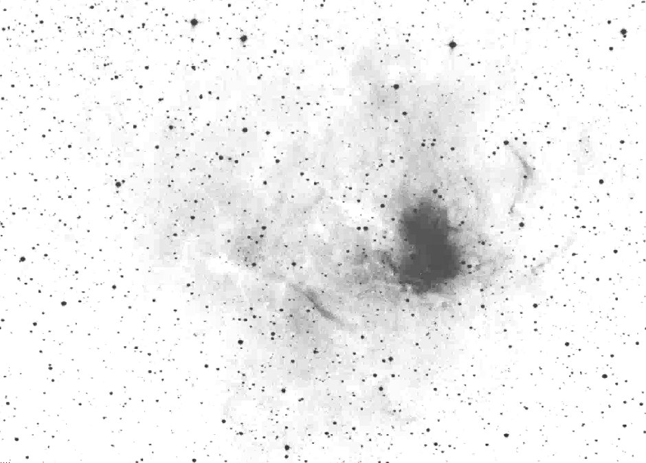

17.5: at 140x with OIII filter appears as a bright, moderately large, circular nebulosity involving a mag 11 star. The brightest portion lies to the W of the star and is elongated 3:2 ~N-S. There appears be a dark gap just W of the mag 11 star. Two very faint stars are superimposed near the edges.
13: bright emission nebula just E of a mag 10.5 star, extends SW-NE, interesting shape.
8: bright, large, ~6' diameter. A mag 10.5 star is at the E side. - Steve Gottlieb